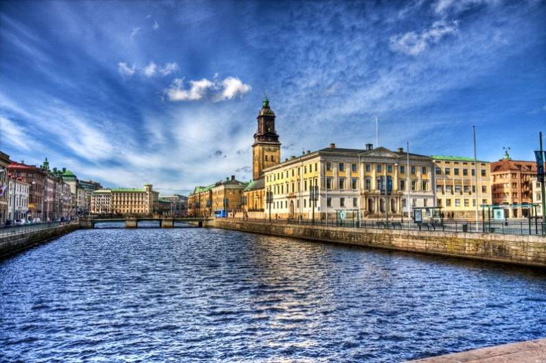
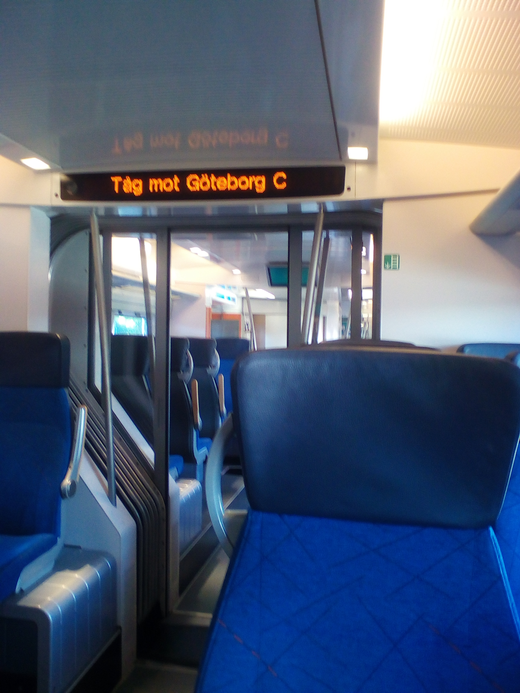

Місце народження 16 грудня 2001 року, м. Бориспіль
Освіта: Загальнооствіня школа №8, м. Бориспіль
НТУ "КПІ імені Ігоря Сікорського", м. Київ
Гетебо́рг (швед. Göteborg, [jœtɛˈbɔrj] — друге за величиною місто Швеції, п'яте за величиною в Нордичих країнах, адміністративний центр лену Вестра-Йоталанд та комуни Гетеборг. Розташоване на Каттегат, на західному узбережжі Швеції, і має населення в 570 тисяч осіб.
 